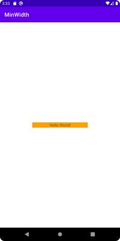

Introduction
Sometimes we might need our TextView with wrap_content width to occupy more space than it will based on amount of characters it displays. For that we can set minimum width. Usually, we do that via XML like this:
<?xml version="1.0" encoding="utf-8"?>
<androidx.constraintlayout.widget.ConstraintLayout xmlns:android="http://schemas.android.com/apk/res/android"
xmlns:app="http://schemas.android.com/apk/res-auto"
xmlns:tools="http://schemas.android.com/tools"
android:layout_width="match_parent"
android:layout_height="match_parent"
tools:context=".MainActivity">
<TextView
android:id="@+id/textView"
android:layout_width="wrap_content"
android:layout_height="wrap_content"
android:background="@drawable/bg_text"
android:gravity="center"
android:minWidth="200dp"
android:text="Hello World!"
app:layout_constraintBottom_toBottomOf="parent"
app:layout_constraintLeft_toLeftOf="parent"
app:layout_constraintRight_toRightOf="parent"
app:layout_constraintTop_toTopOf="parent" />
</androidx.constraintlayout.widget.ConstraintLayout>
Having setup like this we ensure that our TextView will occupy a minimum of 200dp.
Also, we can control minimum width programmatically via: TextView#setMinWidth.
But controlling minimum width programmatically has one caveat that I’d like to describe below.
Let’s check it out.
Resetting minWidth
Suppose, that we have the following task: by default make our TextView occupy at least 200dp, but under some circumstances reset minWidth and make our TextView adhere wrap_content.
In this case we can do something like:
val textView = findViewById<TextView>(R.id.textView)
textView.minWidth = 0
We run our app but still see that TextView takes 200dp width:

Seems like it didn’t work. Why is this the case?
The reason is that while TextView has method setMinWidth it also has setMinimumWidth, so if we instead do:
val textView = findViewById<TextView>(R.id.textView)
textView.minWidth = 0
textView.minimumWidth = 0
We will get expected result:

Note, that setting only minimumWidth won’t work as well.
Investigation
The reason why it happens so is that there are two separate APIs. As mentioned before there is TextView#setMinWidth, but at the same time there is View#setMinimumWidth. Though these methods look similar and refer to the same parameter, using them separately doesn’t provide wanted behavior.
When we declare minWidth in the XML both of these properties are set.
During inflation of View:
case R.styleable.View_minWidth:
mMinWidth = a.getDimensionPixelSize(attr, 0);
break;
And during inflation of TextView:
case com.android.internal.R.styleable.TextView_minWidth:
setMinWidth(a.getDimensionPixelSize(attr, -1));
break;
So, when we set either minWidth or minimumWidth to 0 separately - another property still has a value set. We can see that in debug:
mMinWidth = 500
mMinWidthMode = 2
View.mMinWidth = 500
If we take a look at the documentation to TextView#setMinWidth we’ll see the following:
/*
* The value given here is different than {@link #setMinimumWidth(int)}. Between
* {@code minWidth} and the value set in {@link #setMinimumWidth(int)}, the greater one is used
* to decide the final width.
*/
That is why to clear minimum width we need to call both methods.
Side notes
I don’t have an answer to why setMinWidth was introduced for TextView if we already have setMinimumWidth in the View. Feels like in TextView it could be possible to override the setMinimumWidth method and provide adjusted logic. Maybe it is because of historical reasons. But at least it is good to know about this caveat.
Of course, everything is the same when we talk about height and maxWidth, maxHeight.
One additional note is that if we take a look at how TextView resolves its width:
if (mMaxWidthMode == EMS) {
width = Math.min(width, mMaxWidth * getLineHeight());
} else {
width = Math.min(width, mMaxWidth);
}
if (mMinWidthMode == EMS) {
width = Math.max(width, mMinWidth * getLineHeight());
} else {
width = Math.max(width, mMinWidth);
}
// Check against our minimum width
width = Math.max(width, getSuggestedMinimumWidth());
Here we see not only code to work around max/min width set, but also getSuggestedMinimumWidth. If we take a look at that method we’ll see:
protected int getSuggestedMinimumWidth() {
return (mBackground == null) ? mMinWidth : max(mMinWidth, mBackground.getMinimumWidth());
}
So, not only View#minimumWidth is taken into consideration, but also background width.
That means that if we set some width on a background:
<?xml version="1.0" encoding="utf-8"?>
<shape xmlns:android="http://schemas.android.com/apk/res/android"
android:shape="rectangle">
<solid android:color="#faa000" />
<size android:width="100dp" />
</shape>
And clear all the minimum widths - we’ll see that our view has minimum width based on a background:
Conclusion
So, to conclude, if one wants to change the minimum width on a TextView and for some reason nothing is changed:
- check that you’ve changed
TextView#setMinWidth - check that you’ve changed
TextView#setMinimumWidth - check that there are no width restrictions on a TextView background
Happy coding!